Return to Home
Fried Lumpia
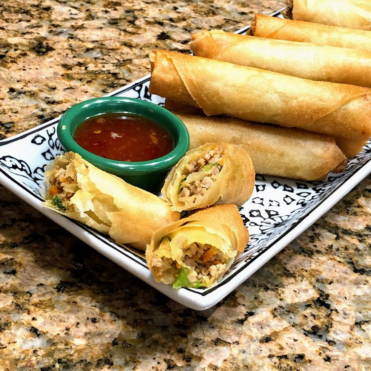
Description
This is a traditional Filipino recipe for fried lumpia, or spring rolls. They're made with paper-thin lumpia
wrappers and filled with a savory mixture of ground pork, cabbage, and other vegetables. Serve lumpia as a
side dish or appetizer with a sweet chili dipping sauce.
Lumpia are fresh or fried spring rolls that are found in Filipino and Indonesian cuisines. The rolls traditionally
feature a thin pastry skin (a.k.a. a lumpia wrapper) and are often stuffed with a savory mixture of ground
pork and vegetables.
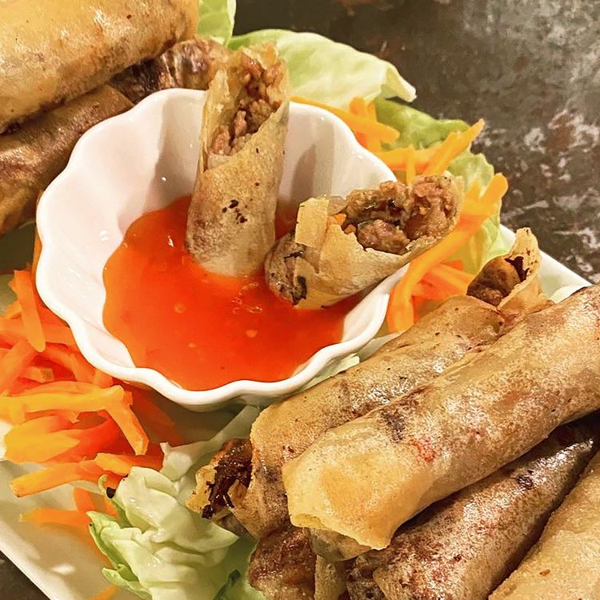
Ingredients
Yields 15 servings
- 1 tablespoon vegetable oil
- 1 pound ground pork
- 1/2 cup chopped onion
- 2 cloves garlic, crushed
- 1/2 cup minced carrots
- 1/2 cup chopped green onions
- 1/2 cup thinly sliced green cabbage
- 2 tablespoons chopped fresh cilantro
- 1 teaspoon ground black pepper
- 1 teaspoon salt
- 1 teaspoon garlic powder
- 1 teaspoon soy sauce
- 30 lumpia wrappers
- 2 cups vegetable oil for frying, or as needed
Directions
-
Gather all ingredients
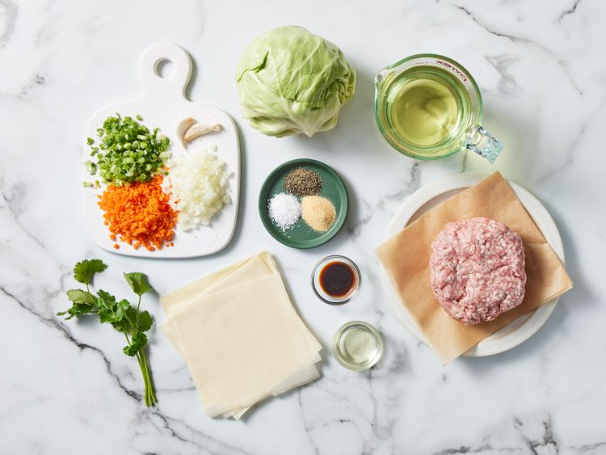
-
Heat 1 tablespoon vegetable oil in a wok or large skillet over high heat. Add pork; cook and stir until crumbly and no longer pink, 5 to 7 minutes. Remove pork from the pan and set aside. Drain grease from the pan, leaving just a thin coating.
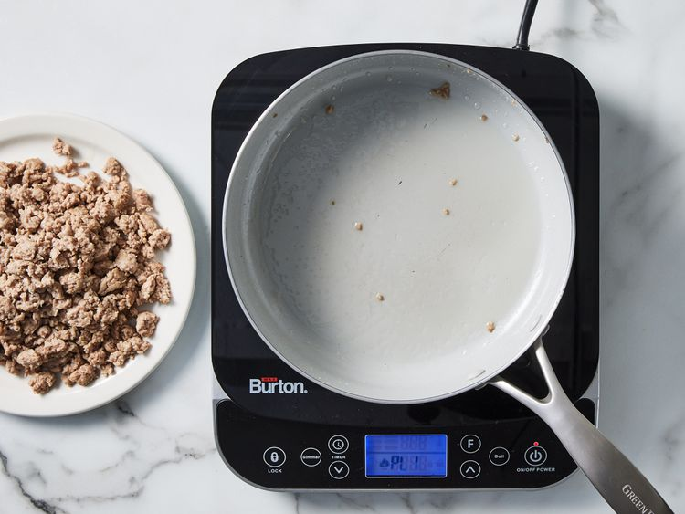
-
Add onion and garlic to the pan; cook and stir until fragrant, about 2 minutes.
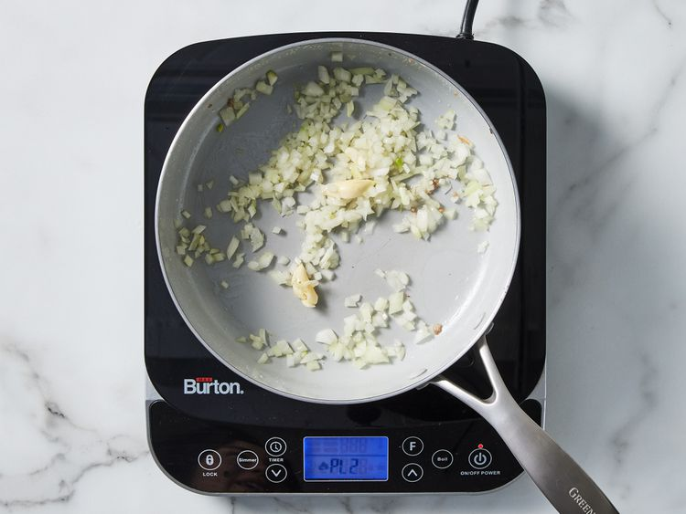
-
Stir in cooked pork, carrots, green onions, cabbage, and cilantro. Season with pepper, salt, garlic powder, and soy sauce. Remove from the heat, and set aside until cool enough to handle, about 5 minutes.
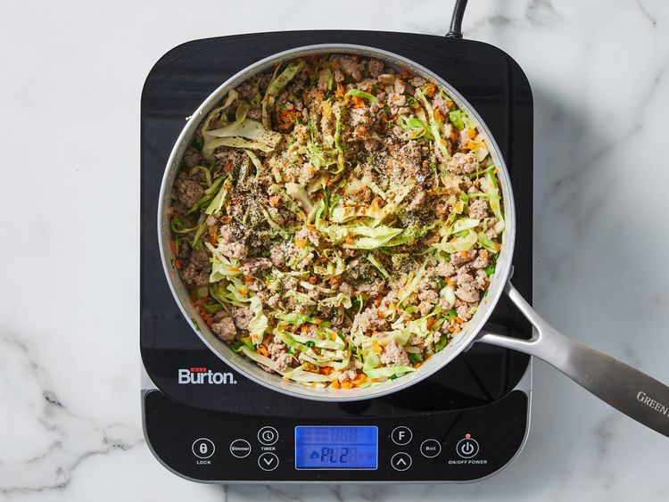
-
To assemble lumpia: Place 3 heaping tablespoons of filling diagonally near one corner of a lumpia wrapper, leaving a 1 ½ inch space at both ends.
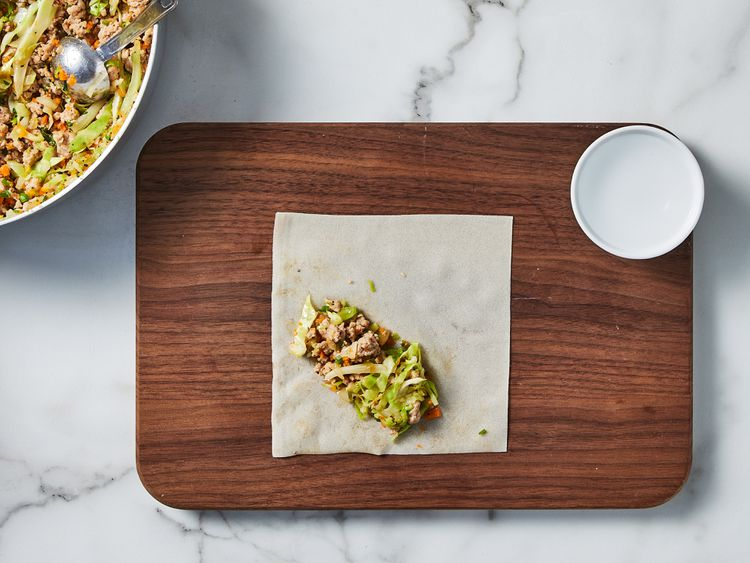
-
Fold the side along the length of the filling over the filling, tuck in both ends, and roll neatly and tightly to close.
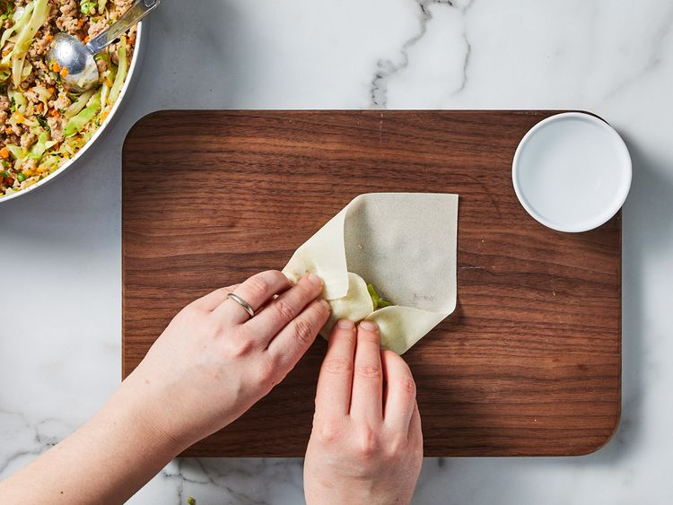
-
Moisten the other side of the wrapper with water to seal the edge. Transfer to a plate and cover with plastic wrap to retain moisture. Repeat to assemble remaining lumpia.
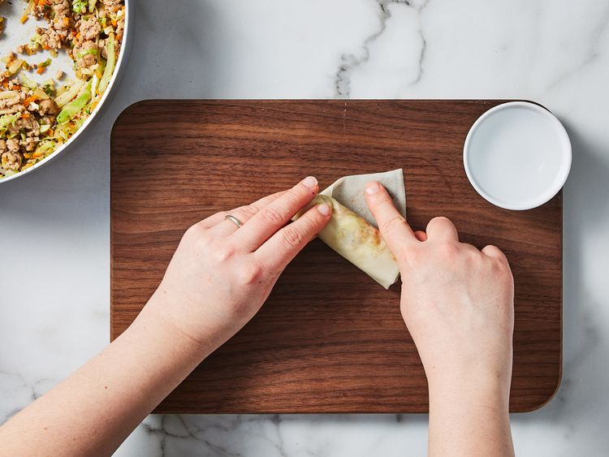
-
Heat 1/2 inch vegetable oil in a heavy skillet over medium heat for 5 minutes.
-
Slide 3 to 4 lumpia into the hot oil, making sure the seams are facing down. Fry, turning occasionally, until all sides are golden brown, 1 to 2 minutes. Transfer to a paper towel-lined plate to drain. Repeat to fry remaining lumpia.
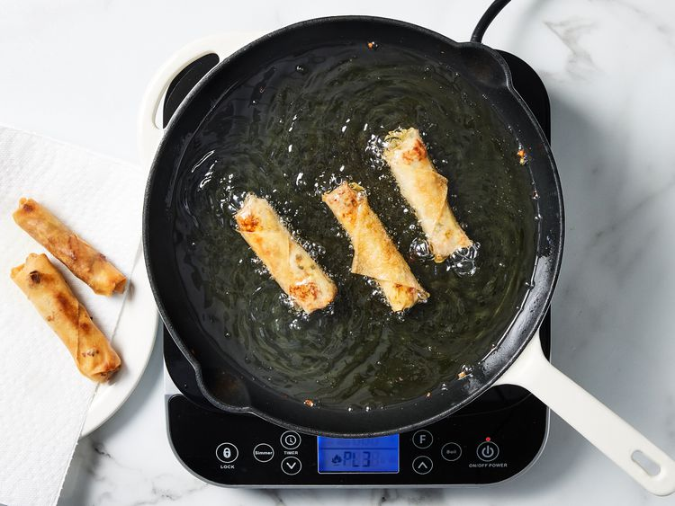
-
Serve immediately. Enjoy!
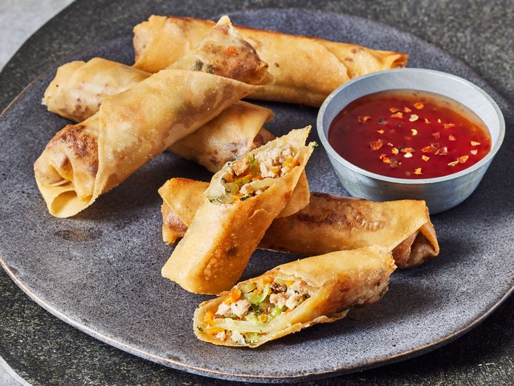
Original recipe by Allrecipes